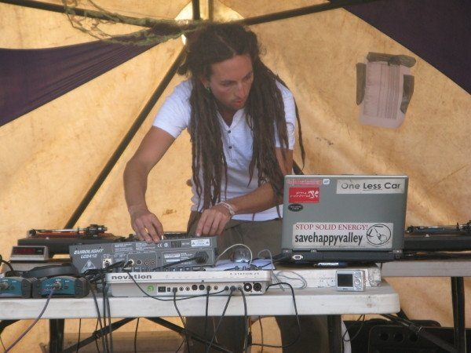

Rainbow Serpent Festival reveals lineup for 2010



There’s little doubt the Rainbow Serpent Festival has come a long way in 12 years of staging events. Far more than just a ‘party’, it’s recognised around the world for being a multifaceted weekend that takes in everything from music to art, performance, spiritual education, relaxation, healing and lots more over one celebrated weekend of dance, colour and expression. But of course, music is a big part of the event and the organisers have just announced the first-round of international and local acts that’ll be present when it returns to Western Victoria over the Australia Day long weekend in January 2010.
It’s an impressive list of international acts for next year’s lineup, with Mad Professor, Robert Babicz, Gabriel Ananda, Charlie May and Antix being just some of the highlights, but they’ll be joined by an absolutely huge list of acts from around Australia (with even more to come shortly).
Rainbow Serpent returns to Beaufort, Victoria from Friday 22nd to Monday 25th January, check out the massive international lineup below:
Mad Professor
Tipper
Ott
Robert Babicz
Gabriel Ananda
Marcel Janovsky
Boris Brejcha
Charlie May
DJ Anti
Antix
Kasey Taylor
Tristan
Zen Mechanics
Liquid Soul
Haltya
Edoardo
Principles of Flight
Masa & Ree K
Greg Coyle
Pan Electric
Abakus
Solar Fields
Hideyo Blackmoon
Local lineup (more TBA)
Sensient
Sun Control Species
Nyquist
Interpulse
Gavin Martin
Tim Harvey
Jonny Mac
Aaron Smiles
Punkz On Junk
Atonix
Suspect
Woodsman
Solatek
Oblique Industries
Motive
Eegor
Paul Abad
Continuum
U-One
Spoonbill
Opiuo
The Mollusk
Bass Bin Laden
Ghettafunkt
Ketastep
Ozzy
Luke Shamanix
Terrafractyl
Mr Peculiar
Player One
Tom Cosm
Andrew Till
Grouch
Mystic Beats
Shades Of Grey
Papa Stylee
Jps & Nam
Heartical Hifi
Seed
Hans Dc
Chestwig
Luke Mcd
Zok
Dave Pham
Mike Callander
Mo Ichi
Miyagi
Heath Myers
Tecy
Andrew Dannoui
Slieker
Msg
Thad Lester
Elad
Billy Dread
Andycan
Tony Loucas
Benzai
Ben Evens
Benza
Menno
Silver B
S&M Project
Danni B
Alias
Psyboags
Cacophony
Dan Raver
Dooby